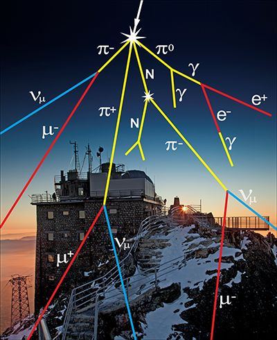
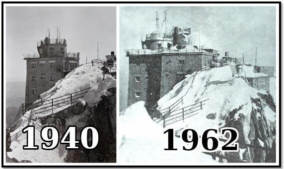
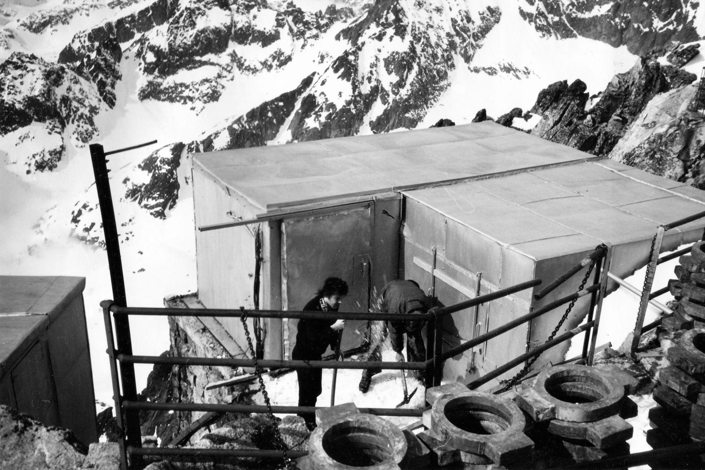
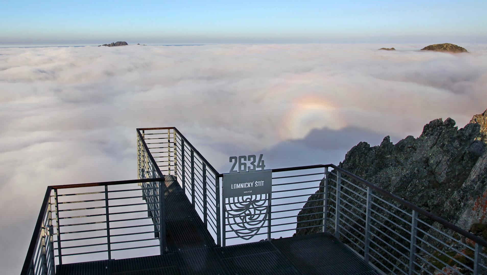
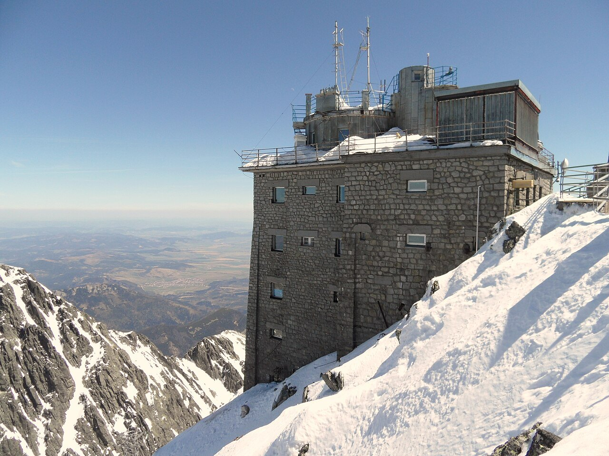
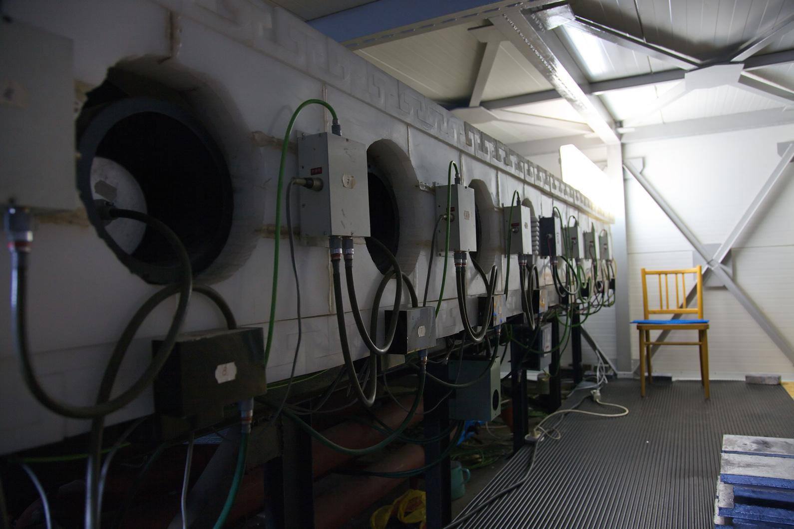
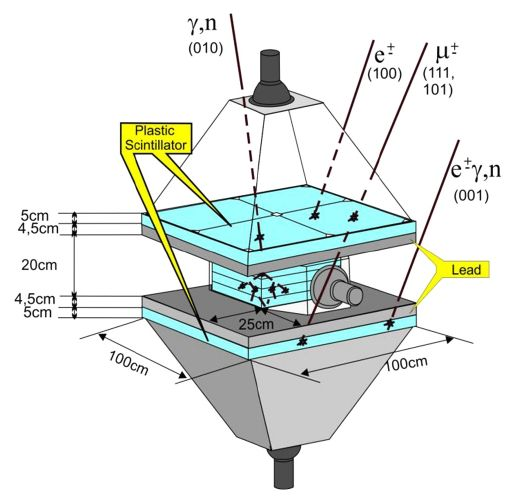
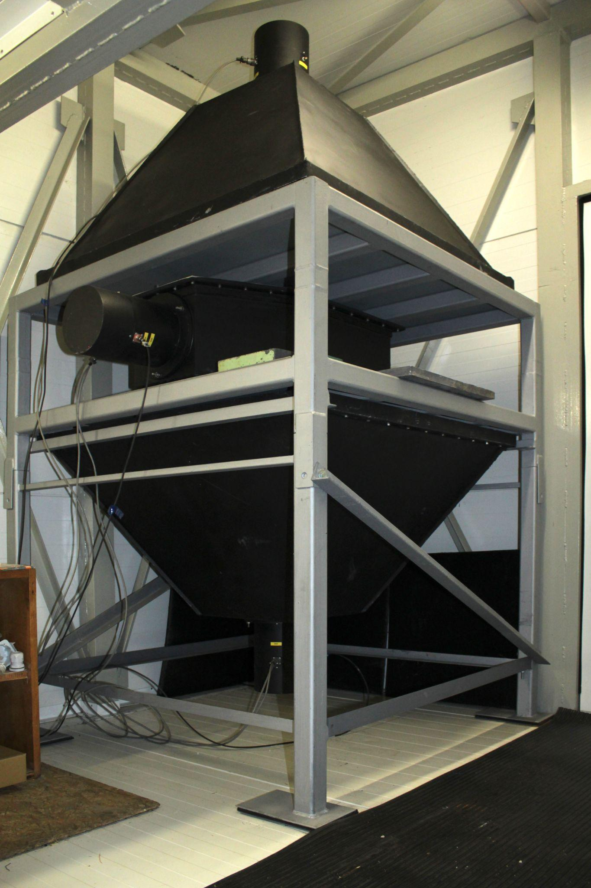
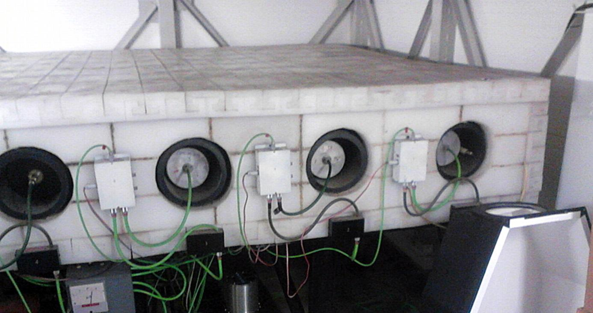

Photographic plates were carried up here to catch cosmic rays in the winter of 1950, before there was any laboratory. The laboratory followed in 1957, built for this purpose during the International Geophysical Year, and intensity has been measured on the summit ever since — without interruption by the present neutron monitor since December 1981. Each time the instrument was replaced, old and new ran side by side for months so that nothing in the series was lost, which is why a measurement made today can still be compared with one made in the station’s first years.
2634 m
Altitude a.s.l.
1957
Laboratory on the summit since
3.84 GV
Vertical cut-off rigidity
Why this mountain
Cosmic rays do not reach the ground as themselves. A proton arriving from a supernova remnant hits a nitrogen or oxygen nucleus high in the atmosphere and is destroyed there, in a cascade of secondary particles — neutrons, protons, electrons, positrons, muons, gamma rays — that spreads downwards and thins out as it goes. What a detector at sea level sees is the exhausted tail of that cascade. What a detector at 2634 m sees is much closer to its core.
That is the first reason for the mountain. The count rate is far higher, so a small change in the primary flux shows up as a signal rather than as noise.

A cosmic ray shower over the observatory. One primary particle arrives; a cascade of secondaries reaches the roof.Department of Space Physics, IEP SAS · low-resolution extract, to be redrawn
The second reason is magnetic. The Earth’s field turns away charged particles below a threshold that depends on where you stand — highest at the equator, lowest at the poles. At Lomnický štít that threshold, the vertical cut-off rigidity, is 3.84 GV, low enough that the station sees a large part of the lower-energy population which higher-cut-off stations never record. High altitude and a low cut-off together are what make the site worth the climb.
The third reason is that the mountain is already there, with a building on it, power, a cable car and people. A permanent service works on the summit year-round to keep the instruments running and the data clean, because an instrument that stops for a week in a blizzard leaves a hole in a record that cannot be filled afterwards.
A short history
The story of the summit begins with meteorology, moves to cosmic rays, and is still running.

The summit in 1940 and in 1962 — the meteorological observatory, and later the observatories of the Slovak Meteorological Society.Rights holder being confirmed · low-resolution composite, originals requested
Winter 1950
The summit as an instrument, before any instrument
Long before a detector was installed here, the mountain itself was the apparatus. In the winter of 1950, physicists from the Institute of Nuclear Physics in Prague exposed photographic emulsions on the summit and let cosmic rays write their own tracks into them. Two experiments came out of it, both published in Nature in December 1951.
The first measured the mean lifetime of the muon. Plates were exposed for 42 days at two stations at once: at Skalnaté pleso, 1780 m, with no absorber, and on the top of Lomnický štít, 2640 m, under 12 cm of lead — chosen because it stops particles as effectively as the 85 g/cm² of air lying between the two stations. Muons that survive the journey from one altitude to the other are counted against those that do not, and the difference gives the decay length. The result, τ₀ = (2.3 ± 0.3) × 10⁻⁶ s, agreed with the value from direct measurements.
The second, by Ludmila Tomášková, tested whether star-producing radiation shows a transition effect — whether adding absorber above the emulsion first increases the number of nuclear disintegrations before absorbing them away. Six batches of plates were exposed for 45 days under lead layers from 1 to 5 cm. The frequency of stars peaked under about 20 g/cm² of lead, well above the exponential absorption curve. The effect was real.
The mountain has been producing cosmic ray physics since before it had a laboratory.
1957
The laboratory is built
Construction begins on an extension to the original cable-car building, with the measurement of cosmic rays as its declared purpose; observation of the solar corona follows later. This is the founding date of the laboratory, and the International Geophysical Year is what puts Lomnický štít on the map of world geophysics. Measurement of cosmic ray intensity itself begins in January 1958, as part of the Czechoslovak IGY programme, at first in two-hour intervals following the IGY Committee’s guidelines.
1968
Routine archiving
Hourly data begin to be archived routinely on 1 February 1968. The monitor of that time counts about 9 × 10⁴ particles per hour.
1972
A bigger instrument, in the wrong place
A four-tube IQSY monitor replaces the original and raises the counting rate to about 8 × 10⁵ per hour. It stands outside the main building, which proves unsuitable: exposed, hard to service, thermally unstable. Today the Skywalk observation deck occupies the spot.

The measurement hut outside the main building, which held the monitor until 1981.Department of Space Physics, IEP SAS · date and photographer to be confirmed

The same spot today: the Skywalk observation deck stands where the monitor once did.Department of Space Physics, IEP SAS
December 1981
The 8NM64 goes into the roof house
The eight-tube monitor begins measuring inside the measurement house on the roof of the building — about twelve tonnes of lead, polyethylene and counter tubes. The counting rate reaches roughly 1.6 × 10⁶ per hour, some eighteen times that of the first instrument, and it is that statistical accuracy which makes short-lived events visible at all. This is the start of the continuous public record.

The observatory building, with the measurement building on its roof at the right. The neutron monitor stood there from 1981 until 2012, when the building was replaced.Bubamara / Wikimedia Commons · CC BY-SA 3.0
At every change
Kept comparable
When one monitor replaced another, both were run side by side for several months so that the recorded intensity could be normalised back to the original measurements of 1958. The series is continuous in more than the trivial sense.
3 June 1982
Solar neutrons
During a large solar flare, neutrons arriving directly from the Sun are detected at ground level for the first time. The detection is made at Jungfraujoch, whose monitor had one-minute resolution. Lomnický štít, recording at five minutes, confirms the event: its statistical accuracy at 2634 m is high enough that the increase is unambiguous even at the coarser resolution. Neutrons are neutral, so they travel in a straight line from the flare and decay on the way; catching them at the ground requires altitude, a low cut-off and luck with the geometry.
2001
Neutron multiplicities
Experiments measuring neutron multiplicity begin in part of the monitor. The distribution of intervals between successive events differs during ground-level enhancements, because solar particles have a softer energy spectrum than galactic ones — so the monitor can say something about the spectrum of an event, not only its size.
June 2012
A new measurement house
The original hut is replaced under the project Space Research Centre: Effects of Space Weather – Phase Two. The redesign cuts energy consumption and makes room for further instruments. The internal steel structure is adapted using wind-load simulations at speeds up to 200 km/h; the cladding and flooring are mineral-wool-insulated sandwich panels, and the ceiling above the neutron monitor is lowered.
2014
SEVAN
Continuous monitoring begins with a second, complementary instrument, which separates the components of the secondary cascade that the neutron monitor cannot distinguish.
August 2020
Gamma spectrometry
An RT-56 scintillation spectrometer is installed to measure the energy spectrum of high-energy photons during thunderstorms.
2025
The record is published
Forty-two years of measurements, from December 1981 to July 2023, are released as the first publicly accessible dataset of that length from the station.
Instruments · Lomnický štít
The instruments
Neutron monitor
A neutron monitor does not detect neutrons the way a camera detects light. It is a machine for turning one energetic particle into a countable number of slow ones.
A high-energy neutron or proton from the atmospheric cascade enters the monitor and strikes a lead nucleus in the producer. The collision breaks several lower-energy neutrons out of that nucleus — the signal is now amplified. A polyethylene reflector keeps those neutrons from escaping and, just as importantly, keeps unwanted low-energy neutrons from the surroundings out. A moderator slows the produced neutrons until they are slow enough to be captured in the counter gas. Each capture releases charged particles, which ionise the gas and produce a short electrical pulse. Counting the pulses gives the count rate, and the count rate is the measurement.
The design is standardised worldwide, which is what makes stations comparable to each other and a global network possible. Ours is the eight-tube NM64 configuration, standing inside the measurement house on the roof.

The 8NM64 inside the measurement house. Eight counter tubes, about 12 tonnes of lead, polyethylene and steel, counting without interruption since December 1981.Department of Space Physics, IEP SAS
SEVAN
The neutron monitor answers one question very well: how many nucleons arrived. SEVAN — Space Environment Viewing and Analysis Network — answers a different one: which particles arrived.
It is a stack. Two layers of plastic scintillator with a third between them, separated by lead absorbers. A charged particle and a neutral one leave different patterns of hits across the three layers, so by recording which layers fired together, the instrument sorts the cascade into components instead of summing it. That makes it sensitive to what the neutron monitor averages away: the electron-positron and gamma-ray component, where thunderstorm effects show up most strongly, and the separate signatures of solar energetic particle events.
Lomnický štít is one node of an international network of identical detectors, which is the point — identical instruments at different latitudes and altitudes measure the same event from different magnetic vantage points.

How SEVAN sorts the cascade: which of the three layers fire together identifies the particle.SEVAN collaboration · low-resolution extract, to be redrawn

The SEVAN detector shortly after installation at Lomnický štít.Department of Space Physics, IEP SAS
Electric field mill and gamma spectrometer
Two smaller instruments turn the station into a thunderstorm laboratory.
A Boltek EFM-100 electric field mill, installed in collaboration with the Institute of Atmospheric Physics of the Czech Academy of Sciences, measures the atmospheric potential gradient. Its stock range of ±20 kV/m was extended with external shunt resistors to about ±165 kV/m, because the fields that develop over this summit during storms saturate an ordinary instrument.
An RT-56 scintillation spectrometer, installed in August 2020, carries a 4 × 4 × 16 inch NaI(Tl) crystal and measures the energy spectrum of the photons those fields produce.
Together with SEVAN they let the station observe thunderstorm ground enhancements — bursts of high-energy particles produced when the electric field inside a thundercloud accelerates electrons — and tie each burst to the field that produced it. During the enhancement of 12 September 2021, SEVAN’s upper channel rose by 578 %, its middle channel by 78 % and its lower channel by 11 %, and the photon spectrum followed a power law over the MeV range.
The 12 September 2021 thunderstorm ground enhancement, as the three SEVAN layers recorded it. The enhancement is almost entirely in the upper layer, which is the electron-positron and gamma-ray channel — the signature of particles accelerated by the field in the cloud rather than of a change in the cosmic ray flux.Drawn from the published values · Department of Space Physics, IEP SAS
Technical detail
The specifications of the three instruments, for readers who need them.
Neutron monitor — 8NM64+
Type
8NM64 — NM64 geometry, eight counter tubes
Counter tubes
8 × SNM-15, 15 cm diameter, 200 cm long, filled with BF₃ in which ¹⁰B is at least 90 % of the boron
Reflector
Low-density polyethylene, 405 × 51 × 225 cm, plates 7.5 cm thick
Functional parts
Reflector · producer (lead) · moderator · proportional counters
Mass
About 12 tonnes
Operating since
December 1981, continuous
Counting rate
About 1.6 × 10⁶ per hour
Reference level
September 1986 monthly mean, 1 745 200 counts per hour, taken as 100 %
Pressure correction
Mean barometric pressure 733.3 mb, barometric coefficient 0.72 %/mb; corrected data produced automatically
Data assembly
Sums of four sections, with linear drift corrections applied to sections A and B
Network
NMDB, station code LMKS
Sensitive to
Nucleonic component of the secondary cascade, chiefly neutrons
Energy response
Approximately 3.8–30 GeV at this cut-off rigidity

Counter tubes and moderator. A neutron captured in the counter gas produces a pulse; the pulse count is the measurement.Department of Space Physics, IEP SAS
SEVAN particle detector+
Type
Three-layer plastic scintillator stack with lead absorbers
Upper and lower layers
Four scintillator slabs each, forming a square of about 1 m side
Middle layer
Five stacked slabs
Absorbers
5 cm lead between layers
Readout
One photomultiplier per layer, with coincidence logic across layers
Operating since
2014
Separates
Charged particles, chiefly muons and electrons, from neutral ones — gamma rays and neutrons — by the coincidence pattern
Thunderstorm instrumentation+
EFM-100
Boltek electric field mill; stock range ±20 kV/m, extended here to approximately ±165 kV/m with external shunt resistors
RT-56
Scintillation spectrometer, 4 × 4 × 16 inch NaI(Tl) crystal with photomultiplier and GPS timing, installed August 2020
RT-56 primary spectrum
1024 channels over 0–9216 keV
RT-56 secondary cosmic ray mode
256 channels, 13.5 MeV threshold
Science · Space weather · Dosimetry
What the measurements are for
A probe and a hazard
Cosmic rays are useful twice over. They carry information about their sources and about everything they passed through on the way, which is a tool for studying the galaxy and the Sun. And they reach the ground, the aircraft cabin and the satellite, which makes them something to be measured rather than assumed.
Galactic cosmic rays arrive continuously, from outside the solar system, and their intensity at Earth is modulated by the Sun on an eleven-year cycle: stronger solar wind and a more disturbed heliospheric magnetic field push the lower-energy particles away, so the galactic flux is lowest around solar maximum and highest around solar minimum. Around each maximum the Sun’s magnetic poles reverse, so the original polarity returns only after two cycles — a 22-year magnetic cycle visible in a long enough record. Short-term solar activity adds sudden events on top: Forbush decreases, sharp drops of a few per cent lasting days as a coronal mass ejection sweeps past, and ground-level enhancements, the rarer increases that occur when the Sun itself accelerates particles to energies high enough to be seen at the ground.
Solar energetic particles are the second population — not a continuous background but individual events, unpredictable, and the ones that matter operationally.
What the record shows
A long, homogeneous series is a different instrument from a long series. Analysis of the daily means from 1982 onwards has picked out, besides the eleven-year cycle, the 27-day recurrence that follows the Sun’s rotation, a quasi-periodicity near 150–155 days, and slower ones around 1.7 and 2.2 years. The daily variation — the only strictly stable periodicity in the data — has an amplitude that falls to a minimum around each solar minimum, in 1986 and again in 1996, and a phase that shifted noticeably in 1995.
The shape of a Forbush decrease: the count rate falls within hours as a coronal mass ejection sweeps past, then recovers over days. Drawn to illustrate the form of the event — the measured events are in the published dataset below.Schematic · Department of Space Physics, IEP SAS
The individual events are on the same record. The strongest ground-level enhancement in the series, on 29 September 1989, is large enough to raise the daily average. The events of 20 January 2005 and 13 December 2006 show acceleration of particles to at least 4 GV. Nine isolated Forbush decreases exceeding 6 % stand out between 1982 and 2006, among them 14–15 July 1982, 29 October 1989, 29–30 October 2003 and 19 January 2005.
Space weather
The station’s data are delivered in real time to groups that monitor and forecast space weather: disturbances of the near-Earth environment — geomagnetic storms, flares, coronal mass ejections — that degrade satellite and aviation systems, change radio propagation through the ionosphere, and raise radiation doses in flight, particularly at high altitudes and high latitudes.
There is also work on prediction rather than recording. A simplified measure of cosmic ray variability, built from the power spectral density of the neutron monitor signal over a defined frequency band, correlates with the geomagnetic Dst index — and the correlation is asymmetric in time: it is stronger when the cosmic ray measure is taken from the interval before the Dst value. That asymmetry, most pronounced around solar maximum, is what makes a ground station of this quality a candidate input to a prediction model, not only a recorder of what has already happened.
Because local conditions on a mountain — wind, snow cover — affect the measurement, high-frequency work is done by comparing Lomnický štít with a second high-altitude monitor at similar cut-off rigidity and asymptotic direction. Jungfraujoch is the usual partner.
Radiation doses in aviation
At cruising altitude the atmospheric shield is thinner. Aircrew accumulate a measurable occupational dose, and that dose depends on the cosmic ray flux at the time of the flight — which is what the station measures. Neutron monitor data are used to derive the heliocentric potential, the parameter that dose models need as input; this work is carried out within the ESA project ESADOS, ESA Support for Aircrew Dosimetry Services. We collaborate closely with the Department of Radiation Dosimetry of the Nuclear Physics Institute of the Czech Academy of Sciences in Prague, whose researchers co-author our thunderstorm and dosimetry work.
Networks
Lomnický štít is a member station of the Neutron Monitor Database (NMDB), the European real-time archive that makes separate stations usable as a single instrument. The department cooperates with other European high-altitude observatories through the Virtual Alpine Observatory consortium, and the SEVAN detector belongs to its own international network.
December 1981 – July 2023 hourly; January 2001 – July 2023 at 1-minute resolution
Network access
Through NMDB, station code LMKS
Finer resolutions
One-second data are recorded; write to us about access
If you use the long record, cite Kisvárdai et al. (2025), which is both the description of the dataset and its release: Analysis of 42 Years of Cosmic Ray Measurements by the Neutron Monitor at Lomnický štít Observatory, Earth and Space Science 12(1), e2024EA003656, doi.org/10.1029/2024EA003656.
Further reading: NMDB, the network this station belongs to, publishes a Slovak-language introduction to cosmic rays and neutron monitors, with a printable brochure — nmdb.eu/public_outreach/sk.
Publications
Published from the summit
From emulsions exposed in a single winter to a 42-year open dataset. Peer-reviewed journal articles only; conference contributions are not listed.
The Forbush decrease observed by the SEVAN particle detector network in the 25th solar activity cycle
Karapetyan, T., Chilingarian, A., Hovsepyan, G., Martoyan, H., Sargsyan, B., Langer, R., Chum, J., Nikolova, N., Angelov, H., Haas, D., Knapp, J., Walter, M., Ploc, O., Šlegl, J., Kákona, M. & Ambrožová, I.
Journal of Atmospheric and Solar-Terrestrial Physics262, 106305 · 2024DOI →
12
Analysis of 42 years of cosmic ray measurements by the neutron monitor at Lomnický štít observatory
Kisvárdai, I., Štempel, F., Randuška, L., Mackovjak, Š., Langer, R., Strhárský, I. & Kubančák, J.
Earth and Space Science12(1), e2024EA003656 · 2025DOI →
Bring your own instrument
The observatory building is shared between two institutes of the Slovak Academy of Sciences: the Institute of Experimental Physics, which runs this laboratory, and the Astronomical Institute. The summit is a scarce resource — a serviced, powered, permanently staffed platform at 2634 m — and we would rather it were busy. We host guest instruments from any field that needs a high-mountain platform, including for long-term campaigns.
Site specifications, what we provide and how access is agreed
Partner access to the summit, hosted instruments and the terms under which they are agreed are set out on the facility page.